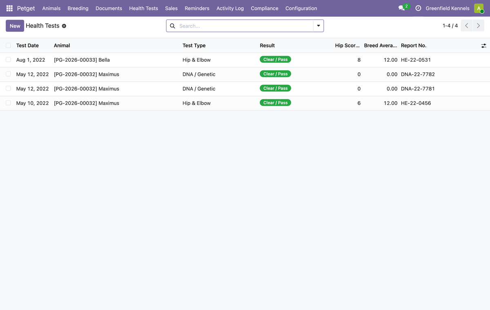

Hip/elbow, DNA and more — with breeding clearance warnings.
Requires the free Petnaly: Breeding Core module. Health data supports — never replaces — your veterinarian's advice.
Health screening register (hip/elbow, DNA and more)

This module is free and open source (AGPL-3). For a turnkey kennel system — data migration, compliance config, hosting, training and a 12-month warranty — we deliver it as a fixed-scope project.
Professional implementation: AUD 15,000–20,000 (custom quote).
Get a custom quote at petnaly.com →
Questions about the module? Email hello@petnaly.com.